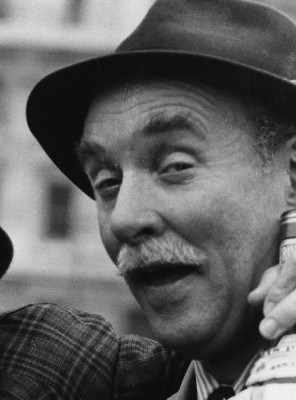

#1394 Clockwork Orange
Alternativ: A Clockwork Orange
Auszeichnungen: für 4 Oscars nominiert


 IMDB-Wertung: 8.3 / 10
IMDB-Wertung: 8.3 / 10  IMDB-TOP-Platzierung: 91
IMDB-TOP-Platzierung: 91  Metascore: 80
Metascore: 80 
Die Handlung spielt im London einer nicht allzu weit entfernten Zukunft und kreist um den jungen Alex. Der liebt Beethoven und ist Anführer der Droogs, einer Jugendgang. Die Gruppe selbst fällt mit nur durch den Akt an sich motivierten Gewalttaten und Vergewaltigungen Wehrloser auf. Nachdem die Jungs wieder mal einen Einbruch nebst Mord begangen haben, wird Alex von einem rebellierenden Gangmitglied niedergeschlagen und der Polizei überlassen. Der ehemalige Anführer kommt ins Gefängnis. Zwei Jahre später muss er als Versuchsobjekt an einer neuartigen, von der Regierung initiierten Aversionstherapie teilnehmen. Die Therapie dauert 14 Tage lang und konfrontiert Alex immer wieder mit Filmszenen stärkster Brutalität. Anschließend kommt er frei, ist nun allerdings nichts weiter als eine willenlose Hülle.
Jahr: 1971
Dauer: 136 Minuten
FSK: 16
Land: England Studio: Warner Home VideoTonspuren: DD5.1 - ,
Untertitel:
Auflösung: 1080p (1786x1080) Größe: 6420 MB
Genre: Drama, Sci-Fi, Krimi
Regisseur:  Stanley Kubrick
Stanley Kubrick
Drehbuch: Stanley Kubrick, Anthony Burgess
Soundtrack:
Darsteller:
 Malcolm McDowell als Alex
Malcolm McDowell als Alex-  Michael Bates als Chief Guard
 Warren Clarke als Dim
Warren Clarke als Dim Adrienne Corri als Mrs. Alexander
Adrienne Corri als Mrs. Alexander Aubrey Morris als Deltoid
Aubrey Morris als Deltoid Margaret Tyzack als Conspirator
Margaret Tyzack als Conspirator Steven Berkoff als Det. Const. Tom
Steven Berkoff als Det. Const. Tom David Prowse als Julian
David Prowse als Julian- Peter Burton als Junior Minister - Minister Frederick's Aid
- Carol Drinkwater als Nurse Feeley
- Barbara Frankland als Bar Customer , uncredited
 Adolf Hitler als Himself , archive footage, uncredited
Adolf Hitler als Himself , archive footage, uncredited Patrick Magee als Mr. Alexander
Patrick Magee als Mr. Alexander- John Clive als Stage Actor
 Carl Duering als Dr. Brodsky
Carl Duering als Dr. Brodsky- Paul Farrell als Tramp
- Clive Francis als Lodger
- Michael Gover als Prison Governor
- Miriam Karlin als Catlady
- James Marcus als Georgie
- Godfrey Quigley als Prison Chaplain
- Sheila Raynor als Mum
- Madge Ryan als Dr. Branom
 John Savident als Conspirator
John Savident als Conspirator- Anthony Sharp als Minister
 Philip Stone als Dad
Philip Stone als Dad- Pauline Taylor als Psychiatrist
- Lindsay Campbell als Police Inspector
- Michael Tarn als Pete
- Barrie Cookson als Dr. Alcott, Ludovico Center check-in
- Jan Adair als Handmaiden in Bible Fantasy
- Gaye Brown als Sophisto
- John J. Carney als Detective sergeant
- Vivienne Maya als Handmaiden in Bible Fantasy
- Richard Connaught als Billyboy
- Prudence Drage als Handmaiden in Bible fantasy
- Lee Fox als Desk Sergeant
- Cheryl Grunwald als Rape Victim in Film
- Gillian Hills als Sonietta
- Craig Hunter als Doctor
- Shirley Jaffe als Victim of Billyboy's gang
- Virginia Wetherell als Stage Actress
- Neil Wilson als Prison Check-in Officer
- Katya Wyeth als Girl in Ascot Fantasy
- Frankie Abbott als Rex - Police Landrover Driver / 1st Policeman at Duke of York , uncredited
- Jack Arrow als Mustachioed Ludovico Technician , uncredited
- Joe Bartlett als Smiley Prisoner next to Kissy Faced Prisoner , uncredited
 Roy Beck als Prison Officer in Chapel , uncredited
Roy Beck als Prison Officer in Chapel , uncredited- Robert Bruce als Milkbar Bouncer , uncredited
- Maurice Bush als Charlie - Security Guard outside Alex's Ludovico Room , uncredited
Datei: X:\1971\Clockwork Orange (1971, FSK16, 1786x1080).mkv seit 30.06.2015
Festplatte: HD 1971-1979
 Es gibt insgesamt 28 Filme in der Gruppe '1971'
Es gibt insgesamt 28 Filme in der Gruppe '1971'